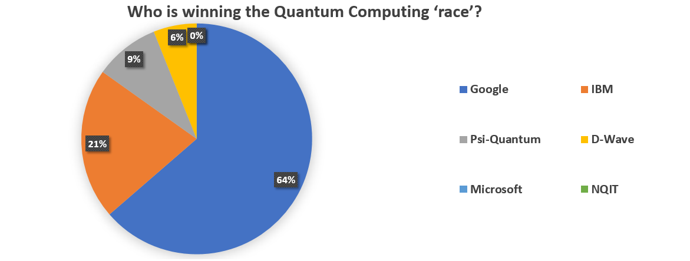

Given enough time, scientific hypotheses can be tested by collecting data and evidence so scientists can agree about the objective facts they study. However, on the cutting edge of technology the wealth of possibilities, arguments, questionable claims and not enough data means that even scientists who work in the same group sometimes disagree about the hot research topics of the day!
For example, after we surveyed 40 researchers (including postdocs and PhD students) we found that predictions for the advent of widespread adoption of quantum computation ranged from 5 years to 50 years. Still the overwhelming majority agreed that quantum computation was 10+ years away (86%). For other technologies, the majority was less certain. Here is a list of the technologies where the most common response was '5-10 years from commercial adoption' with the percentage of people who chose this in brackets: quantum enhanced cameras (50%), quantum key distribution (49%), quantum magnetic sensors (66%) and quantum gravity sensors (42%). Only for quantum random number generators the most common response was 'less than 5 years' (60%)!
In a response to the question 'Who is going to win the race to develop a quantum computer?' Google came out as a clear winner. The pie chart above shows the distribution of first choices.